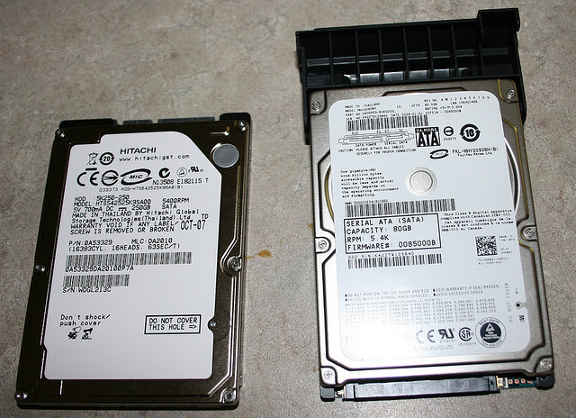
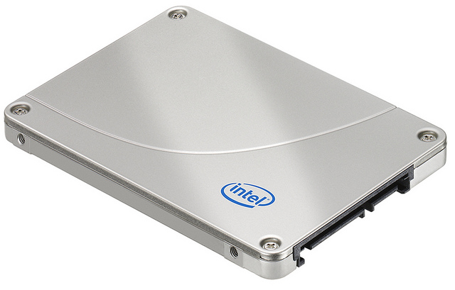
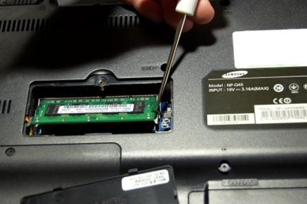
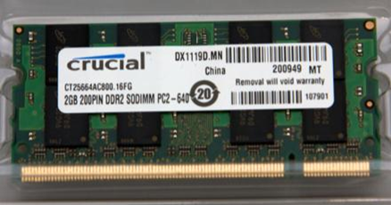

PCH 19 Notebook Power and Physical Security <<
Previous Next >> HW2
Laptop and Notebook Component Replacement
Overview總覽
In this module, we will discuss the types of hard drives used in laptop computers, as well as how to replace or upgrade them. We will also discuss the types of memory used in laptop and notebook computers, and the difference between upgrading laptop or notebook memory and upgrading memory in a standard desktop computer. Lastly, we will discuss the types of hard drive failure you may experience with a notebook computer and the best way to identify the failure and repair it properly.
在本模塊中，我們將討論膝上型計算機中使用的硬盤驅動器類型，以及如何更換或升級它們。我們還將討論筆記本電腦和筆記本電腦中使用的內存類型，以及升級筆記本電腦或筆記本電腦的內存與升級標準台式計算機中的內存之間的區別。最後，我們將討論筆記本計算機可能遇到的硬盤驅動器故障類型，以及識別故障並正確修復的最佳方法。
Notebook Hard Drives筆記本硬盤
Laptop storage has evolved over the years from using traditional HDDs, which are very large and require a lot of power, to using smaller and smaller variants.
多年來，筆記本電腦存儲已經從使用非常大且需要大量電源的傳統HDD到使用越來越小的變體而發展。
Similar to the desktop, older generation laptops used IDE/PATA, but current technology uses SATA connectors, or in the case of mSATA directly plugs into a port on the motherboard.
與台式機類似，較早的筆記本電腦使用的是IDE / PATA，但當前的技術使用的是SATA連接器，或者在mSATA的情況下直接插入主板上的端口。
Whereas traditional desktop computers use a 3.5-inch HDD, laptops typically use a 2.5-inch hard drive. These drives contain capacity speeds comparable to their larger counterparts. Smaller notebooks might use an even smaller variant that is only 1.8 inches in diameter. These drives often operate at similar speeds to their larger counterparts, but may lack the same capacity for storage. These HDDs make use of a spinning disk with magnetic storage design.
傳統台式機使用3.5英寸HDD，而筆記本電腦通常使用2.5英寸硬盤。這些驅動器的容量速度可與大型驅動器媲美。較小的筆記本可能會使用直徑甚至只有1.8英寸的甚至更小的變體。這些驅動器通常以與大型驅動器相似的速度運行，但可能缺少相同的存儲容量。這些硬盤使用具有磁存儲設計的旋轉磁盤。
Current laptops, especially netbooks and other laptops that require thinner, lighter, and faster storage options, use solid-state disks (SSDs) following the 2.5, 1.8, or mSata form factor. Initially, manufacturers developed a hybrid disk combining an internal disk with a form of flash storage used to speed up access times. These were faster than traditional HDDs and much less expensive than a full SSD at the time.
當前的筆記本電腦，尤其是上網本和其他需要更薄，更輕和更快存儲選項的筆記本電腦，使用的固態硬盤（SSD）遵循2.5、1.8或mSata尺寸規格。最初，製造商開發了一種混合磁盤，該磁盤將內部磁盤與用於加速訪問時間的閃存形式結合在一起。它們比傳統的HDD更快，並且比當時的完整SSD便宜得多。
SSDs contain no actual disk or moving parts. They are highly resistant to shock and movement, and have low latency and high access speeds. The performance of SSDs is far superior to traditional spinning hard disk drives, and they use less power than traditional hard disks, as well, which makes them ideal for mobile applications such as laptops and notebooks. HDD manufacturers have improved the design of SSDs, making them more resilient to I/O writes and reads and less susceptible to the failure first generation SSDs could suffer from if not configured correctly.
SSD不包含實際的磁盤或活動部件。它們具有很高的抗衝擊和移動性，並具有低延遲和高訪問速度。SSD的性能遠遠優於傳統的旋轉硬盤驅動器，並且比傳統的硬盤消耗更少的功率，這使其成為筆記本電腦和筆記本電腦等移動應用程序的理想選擇。HDD製造商已經改進了SSD的設計，使其對I / O寫入和讀取的彈性更大，並且如果配置不正確，第一代SSD可能會遭受的故障影響較小。
In addition to traditional SATA or mSATA SSDs, many laptop manufacturers have chosen to incorporate embedded multi-media cards (eMMCs) in smaller 2-in-1 laptops, Chromebooks, or tablets that are designed with a detachable keyboard. eMMCs have faster access times than traditional HDDs, but are slower than an SSD. As the name implies, this storage device is an integrated circuit (IC) chip located on the motherboard. Currently, eMMCs most often come in either 16 GB, 32 GB or 64 GB capacity. Manufacturers most often include a micro secure digital (MicroSD) card reader and USB port to allow for external storage.
除了傳統的SATA或mSATA SSD之外，許多筆記本電腦製造商還選擇將嵌入式多媒體卡（eMMC）集成到較小的2合1筆記本電腦，Chromebook或配有可拆卸鍵盤的平板電腦中。eMMC的訪問時間比傳統HDD快，但比SSD慢。顧名思義，此存儲設備是位於主板上的集成電路（IC）芯片。當前，eMMC最多具有16 GB，32 GB或64 GB的容量。製造商最經常使用的是微型安全數字（MicroSD）讀卡器和USB端口，用於外部存儲。
Laptop hard drives and SSDs are generally upgradable and replaceable, but the “internal storage” label for eMMC is not.
筆記本電腦硬盤和固態硬盤通常可以升級和更換，但是eMMC的“內部存儲”標籤卻不是。
With HDDs and SSDs being standard form factors (2.5-inch or 1.8-inch varieties), they can easily be removed and replaced with a larger capacity or higher speed version as long as the new drive matches in physical size and connection type (SATA or mSATA). To replace a hard drive, the technician simply removes the drive in accordance with the manufacturer’s instructions. It is always important to check with the laptop manufacturer’s instructions on the best way to remove the drive. Some models have a direct access area from the bottom of the laptop, while others require full disassembly of the machine, including the keyboard and casing.
HDD和SSD是標準尺寸（2.5英寸或1.8英寸），只要新驅動器的物理尺寸和連接類型（SATA或SATA）相匹配，就可以輕鬆地將它們卸下並替換為更大容量或更高速的版本。 mSATA）。要更換硬盤驅動器，技術人員只需按照製造商的說明卸下驅動器。請務必與膝上型計算機製造商的說明一起檢查拆卸驅動器的最佳方法。某些型號從筆記本電腦的底部可以直接進入，而其他型號則需要完全拆卸機器，包括鍵盤和機殼。


Memory記憶
Laptops use memory modules similar to their larger desktop counterparts. In desktops, DDR, DDR2, and DDR3 RAM modules are used to upgrade our systems, based upon the memory slots provided by the motherboard, and the speed and size accepted by the motherboard. Laptops, similarly, require the proper size and speed modules for their motherboards. Therefore, it is important to check the manufacturer’s manual for a laptop. Laptop memory also comes in DDR, DDR2, and DDR3 varieties, but laptops use the SODIMM (small outline dual in-line memory module) form factor. These are much smaller, more compact versions of the standard DDR, DDR2, and DDR3 modules, but they operate at the same speed and capacity as the larger versions.
筆記本電腦使用的內存模塊與大型台式機相似。在台式機中，DDR，DDR2和DDR3 RAM模塊用於根據主板提供的內存插槽以及主板可接受的速度和大小來升級我們的系統。類似地，筆記本電腦需要適合其主板的尺寸和速度模塊。因此，重要的是檢查筆記本電腦的製造商手冊。筆記本電腦內存還提供DDR，DDR2和DDR3品種，但筆記本電腦使用SODIMM（小尺寸雙列直插式內存模塊）外形。這些是標準DDR，DDR2和DDR3模塊的更小，更緊湊的版本，但是它們以與較大版本相同的速度和容量運行。

Replacing and upgrading memory is a fairly simply process, similar to replacing memory in a desktop machine. First, remove the power by shutting down the laptop, removing the power cord, and (if possible) removing the battery from the laptop. Next, replace the existing memory module, or add a second one, if applicable. Some laptops, like the one shown above, have a small plastic door covering the memory slots for easy access. Others may require full disassembly to access the memory slots. In a desktop computer, the modules are inserted at a straight-up-and-down vertical angle (90 degrees), but with laptops, the modules are inserted at a 45-degree angle first. Then the modules are pushed down into place once they are fully inserted into the memory slot. This is required due to the space limitations in the laptop.
更換和升級內存是一個相當簡單的過程，類似於在台式機中更換內存。首先，請關閉筆記本電腦，拔下電源線，並（如果可能）從筆記本電腦中取出電池，以斷開電源。接下來，更換現有的內存模塊，或添加第二個內存模塊（如果適用）。某些筆記本電腦，如上圖所示，有一個小的塑料門蓋住內存插槽，以便於使用。其他可能需要完全拆卸才能訪問內存插槽。在台式計算機中，模塊以垂直向上和向下的垂直角度（90度）插入，但在筆記本電腦中，模塊首先以45度角插入。將模塊完全插入內存插槽後，將其向下推入到位。
Some laptops have a single memory slot, while others have two slots. Some laptops may have their memory soldered onto the motherboard, making upgrading or removing the memory impossible. Always check your laptop’s manual for details on how many modules your laptop will accept (if any), how many gigabytes they can be, and the speed of the modules. For example, in the bottom image below, we see a 2 GB DDR2 memory module that operates at 6400 MBps, or 800 MHz.
一些筆記本電腦只有一個內存插槽，而其他筆記本電腦有兩個插槽。有些筆記本電腦的內存可能焊接在主板上，因此無法升級或刪除內存。請始終查看筆記本電腦的手冊，以獲取有關筆記本電腦可以容納多少個模塊（如果有），可以容納多少GB以及模塊速度的詳細信息。例如，在下面的下圖中，我們看到一個2 GB DDR2內存模塊，其工作頻率為6400 MBps或800 MHz。

Troubleshooting Hard Drives硬盤驅動器故障排除
Hard drive failures are fairly uncommon occurrences for computers overall, but in laptops they have a higher occurrence rate than in desktops. Usually, this occurs when something jars the laptop while the hard disk is working. Another cause of hard drive failure is an overheated hard drive. The hard drive, like other devices in the computer, requires adequate cooling to ensure proper operation. If the hard drive overheats, you need to check to see if the laptop is receiving adequate cooling. You can do this by making sure the air intake and fans are working properly and are not filled with dust.
硬盤故障在整個計算機上很少發生，但在筆記本電腦中，其發生率要高於台式機。通常，當硬盤工作時筆記本電腦受到震動時，會發生這種情況。硬盤驅動器故障的另一個原因是硬盤驅動器過熱。與計算機中的其他設備一樣，硬盤驅動器也需要充分冷卻以確保正常運行。如果硬盤驅動器過熱，則需要檢查筆記本電腦是否受到足夠的冷卻。您可以通過確保進氣口和風扇正常工作並且沒有灰塵的方式來執行此操作。
Mechanical failures and defects are another possible cause of hard drive failure in laptops and notebooks. Bad sectors in the hard disk, the motor’s failure to perform rotation, power supply issues, and many other issues can cause hard drive failures. An old hard disk may create problems, or mechanical failure can occur if you have formatted the hard disk too many times. Normally, you can hear a mechanical failure — there may be a clicking sound coming from the disk, or you will hear the disk fail to “spin up” when powered on.
機械故障和缺陷是筆記本電腦和筆記本電腦中硬盤驅動器故障的另一個可能原因。硬盤中的壞扇區，電機無法旋轉，電源問題以及許多其他問題都可能導致硬盤驅動器故障。舊的硬盤可能會造成問題，或者如果您對硬盤進行了過多的格式化，則可能會導致機械故障。通常，您會聽到機械故障的聲音-磁盤可能會發出喀嗒聲，或者您會在通電後聽到磁槃無法“旋轉”的聲音。
Other issues with hard drives include data becoming corrupted or invalid due to virus infection or attacks, abnormal system shutdown, accidental cancellation of a running program, frequent power failure, and many other causes. These are not issues solely in laptops; these problems can occur with both laptop and desktop models.
硬盤驅動器的其他問題包括由於病毒感染或攻擊，異常的系統關閉，意外取消正在運行的程序，頻繁的電源故障以及許多其他原因而導致數據損壞或無效。這些不僅僅是筆記本電腦的問題；筆記本電腦和台式機型號都可能出現這些問題。
To determine if a laptop hard drive has failed, you must follow a logical troubleshooting methodology. First, attempt to boot up the computer. If you cannot see the display working, then listen for the hard disk. Did you hear it “spin up” when you powered on the machine? If not, it is likely a laptop power issue and not a hard drive issue. Check the battery and the AC adapter to ensure the laptop is receiving power.
要確定筆記本電腦硬盤驅動器是否發生故障，您必須遵循邏輯上的故障排除方法。首先，嘗試啟動計算機。如果看不到顯示屏，請收聽硬盤。打開機器電源時，您是否聽到過它“旋轉”的聲音？如果沒有，則很可能是筆記本電腦電源問題，而不是硬盤驅動器問題。檢查電池和交流適配器，以確保膝上型計算機已接通電源。
If the laptop display did turn on, then you need to see if the operating system boots. If it does not boot, it could be a data corruption issue or a hard drive failure. First, try booting the laptop from the AC adapter instead of the battery. Did that work? If so, it may be that the battery isn’t providing enough power to spin the hard drive properly. If that does not work, next, check the BIOS to see if the hard drive is being recognized. If the drive is not recognized in the BIOS, check the physical connections (power and data cables, like IDE/PATA and SATA). If the hard drive is recognized in the BIOS, but the operating system does not boot, it could be that the data on the drive has become corrupted; therefore, the operating system may need to be reinstalled and the user data may need to be restored from backup.
如果筆記本電腦的顯示屏確實打開了，那麼您需要查看操作系統是否啟動。如果無法啟動，則可能是數據損壞問題或硬盤故障。首先，嘗試從交流適配器而不是電池引導筆記本電腦。那行嗎？如果是這樣，則可能是電池電量不足，無法正確旋轉硬盤驅動器。如果那不起作用，則接下來，檢查BIOS以查看硬盤驅動器是否被識別。如果在BIOS中無法識別驅動器，請檢查物理連接（電源和數據電纜，例如IDE / PATA和SATA）。如果在BIOS中識別到硬盤驅動器，但操作系統無法引導，則可能是驅動器上的數據已損壞；否則，可能是驅動器上的數據已損壞。因此，可能需要重新安裝操作系統，並且可能需要從備份中還原用戶數據。
If the drive isn’t recognized by the BIOS or loading the operating system, you may have a hard drive failure. Listen to the hard drive; do you hear a mechanical clicking sound? If you do, your hard drive is likely failing and should be replaced as soon as possible. If you do not hear any clicking noises, there might be bad sectors on the disk, so perform disk maintenance procedures, such as “check disk” (CHKDSK) or “disk defragmentation” (DISK DEFRAG).
如果BIOS無法識別驅動器或無法加載操作系統，則可能是硬盤故障。聽硬盤驅動器；您聽到機械的喀噠聲嗎？如果這樣做，您的硬盤驅動器可能會發生故障，應盡快更換。如果沒有聽到任何咔嗒聲，則表明磁盤上可能存在壞扇區，因此請執行磁盤維護過程，例如“檢查磁盤”（CHKDSK）或“磁盤碎片整理”（DISK DEFRAG）。
PCH 19 Notebook Power and Physical Security <<
Previous Next >> HW2